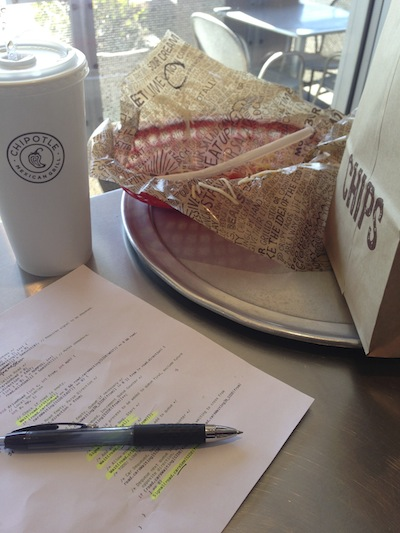

The Academic
Undergraduate Education
As an incoming Junior at UC San Diego, I was initially in a rush to complete my two year journey towards completing an undergraduate degree. UC San Diego provided many opportunities to become engaged academically.
After completing my first quarter I was able to pursue an undergraduate research opportunity through PhD Ali Irturk. This experience led to my involvement in undergraduate research with PhD Ryan Kastner and PhD Candidate Christopher Barngrover over the next two years.
In addition to my research in Underwater Mine Detection, I 'clustered' in Artificial Intelligence and through this experience I was exposed to many different machine learning and statistical models. One of the most inspirational instructors at UC San Diego was Professor Lawrence Saul. His class on Artificial Intelligence: Search and Reasoning was by far one of the most challenging and educational experiences of my undergraduate career. This experience showed me how computers can be applied to real-world problems.
Although my undergraduate education extended well beyond the classroom; many of my instructors in college had a profound influence on my Computer Science career and direction. One notable professor was PhD Paul Kube who I had the pleasure of taking three different classes from as well as working under him as a tutor.
First Classes
Starting at Grossmont Community College in El Cajon, CA when I was sixteen years old. These classes with PhD Ronald Norman and Mike Qualls provided a welcoming introduction to many of the programming fundamentals I continue to apply today.
After completing these computer science courses, my interest and performance led me to be a tutor at Grossmont. This experience supported by the dean, Janet Gelb and lab manager, Donald Craine enabled me to gain a more thorough understanding of computer science and enabled me to be prepared for the more rigorous program at UC San Diego.
First Exposure
When I was an infant, I would watch my parents and older siblings interacting with the computer. I would see my parents writing documents for work and my brothers playing video games such as 'Doom'. Perhaps my favorite program was a crossword puzzle generator. My mother would generate crossword puzzles tailored to my academic interests. The crossword puzzle program became one of my favorite programs because of its ability to combine words in an 'intelligent' way.
Throughout the remainder of my childhood, I took every opportunity I could to learn more about computers. When I was eight years old I received a computer as a gift from my parents. Over the next six years, I tore that computer apart many times and learned how to put it back together. Making small upgrades until the new machine bore little resemblance of the original machine I received on my eighth birthday.

My two favorite things; Computer Science & Chipotle! There isn't a computer science problem that I haven't been able to figure out with a full Mr. Pibb and my crispy tacos!
Academic History
BS Computer Science
UC San Diego (2011 to 2013) - Course History
A student in the Computer Science and Engineering department of the Jacobs School of Engineering. This intensive academic program coupled with my participation in undergraduate research made my experience very rewarding.
| Dept. | # | Course Description | Instructor | Academic Period |
| PHIL | 164 | Technology and Human Values | Joyce Havstad | 2013 Spring |
| CSE | 141 | Introduction to Computer Architecture | Steven Swanson | 2013 Spring |
| CSE | 141L | Project in Computer Architecture | Steven Swanson | 2013 Spring |
| CSE | 199H | CSE Honors Thesis Research for Undergraduates | Chris Barngrover Ryan Kastner |
2013 Spring |
| CSE | 101 | Design and Analysis of Algorithms | Andrew Kahng | 2013 Winter |
| CSE | 120 | Principles of Operating Systems | Joseph Pasquale | 2013 Winter |
| CSE | 140 | Components and Design Techniques for Digital Systems | Alex Orailoglu | 2013 Winter |
| CSE | 140L | Digital Systems Laboratory | Alex Orailoglu | 2013 Winter |
| CSE | 199H | CSE Honors Thesis Research for Undergraduates | Chris Barngrover Ryan Kastner |
2013 Winter |
| CSE | 132A | Database Systems Principles | Victor Dan Vianu | 2012 Fall |
| CSE | 166 | Image Processing | Serge Belongie | 2012 Fall |
| CSE | 197 | Field Study in Computer Science & Engineering | Paul Kube | 2012 Fall |
| POLI | 100T | Business and Politics | Salvatore Nunnari | 2012 Fall |
| USP | 101 | Introduction to Policy Analysis | Nicole S Bonoff | 2012 Spring |
| CSE | 131 | Compiler Construction | Rick Ord | 2012 Spring |
| CSE | 151 | Introduction to Artificial Intelligence: Statistical Approaches | Kamalika Chaudhuri | 2012 Spring |
| CSE | 199 | Independent Study | Chris Barngrover Ryan Kastner |
2012 Spring |
| CSE | 90 | Undergraduate Seminar (Introduction to Advanced Tutor Training) | Gary Gillespie | 2012 Winter |
| CSE | 130 | Programming Languages: Principles and Paradigms | Sorin Lerner | 2012 Winter |
| CSE | 150 | Introduction to Artificial Intelligence: Search and Reasoning | Laurence K. Saul | 2012 Winter |
| MATH | 183 | Statistical Methods | Adam R. Bowers | 2012 Winter |
| CSE | 199 | Independent Study | Chris Barngrover Ryan Kastner |
2012 Winter |
| CSE | 110 | Software Engineering | William E. Howden | 2011 Fall |
| CSE | 105 | Introduction to Theory of Computation | Daniele Micciancio | 2011 Fall |
| CSE | 100 | Advanced Data Structures | Paul Kube | 2011 Fall |
| CSE | 30 | Computer Organization & Systems Programming | Ali Irturk | 2011 Summer |
| CSE | 21 | Mathematics for Algorithm and Systems | Paul L Ruvolo | 2011 Summer |
| CSE | 15L | Software Tools and Techniques Laboratory | Richard Ord | 2011 Summer |
| CSE | 12 | Basic Data Structures and Object-Oriented Design | Paul Kube | 2011 Summer |
AS Mathematics & AA University Studies
Grossmont College (2009 to 2011) - Course History
Grossmont provided a very beneficial and cost-effective approach to my lower-division college education. Furthermore, it provided the opportunity to participate in a very diverse academic setting.
| Dept. | # | Course Description | Instructor | Academic Period |
| MATH | 284 | Linear Algebra | Raymond Funk | 2011 Spring |
| MATH | 285 | Differential Equations | Shirley Pereira | 2011 Spring |
| ES | 076B | Intermediate Tennis | Robert Rump | 2011 Spring |
| COMM | 120 | Interpersonal Communication | Thomas O'Rourke | 2011 Spring |
| CA | 169 | Essential Skills / Culinary Arts | Joe Orate | 2011 Spring |
| PHIL | 110 | Introduction to General Philosophy | William Hoaglin | 2010 Fall |
| MATH | 245 | Discrete Mathematics | Patrick Burrus | 2010 Fall |
| ES | 076A | Beginning Tennis | Robert Rump | 2010 Fall |
| ENGL | 124 | Advanced Composition | Qais Sako | 2010 Fall |
| COMM | 144 | Comm. Studies: Race & Ethnicity | Jade Solan | 2010 Fall |
| MATH | 281 | Multivariable Calculus | Michael Lines | 2010 Summer |
| ANTH | 130 | Introduction to General Anthropology | Charles Wallace | 2010 Summer |
| POSC | 121 | Mechanics of Solids | Brian Jennings | 2010 Spring |
| PHYS | 240 | Electricity, Magnetism and Heat | Ross Cohen | 2010 Spring |
| MATH | 299B | Problem Solving Seminar | Raymond Funk | 2010 Spring |
| ENGL | 120 | College Composition and Reading | Micah Berger | 2010 Spring |
| ECON | 120 | Principles of Macroeconomics | Scott McGann | 2010 Spring |
| ART | 100 | Art Appreciation | Sandra Wascher | 2010 Spring |
| PHYS | 140 | Mechanics of Solids | Stephenie Plante | 2009 Fall |
| MATH | 280 | Intermediate Calculus | Arturo Millan | 2009 Fall |
| MATH | 299B | Problem Solving Seminar | Raymond Funk | 2009 Fall |
| ENGL | 110 | College Composition | Micah Berger | 2009 Fall |
| CSIS | 294 | Intermediate Java Programming and Fundamental Data Structures | Mike Qualls | 2009 Fall |
| POSC | 120 | Introduction to Politics and Political Analysis | Brian Jennings | 2009 Summer |
Grade School
The Learning Choice Academy (2004 - 2009) - Course History
I attended this school for 8th grade under the instruction of Leslie Emmons. When I entered high school I fell under the instruction of Jeff Follett. Between these two excellent educational partners, I was able to accomplish a variety of academic and non-academic goals. Goals which would not have been possible given a traditional education experience. I believe Jeff and Leslie enabled me to become the person I am today. In addition to my education through The Learning Choice Academy, my educational partners advised me to take classes at Grossmont College and Glendale Community College concurrently with my high school classes.
High-School Classes from Grossmont College
| Dept. | # | Course Description | Instructor | Academic Period |
| MATH | 180 | Analytic Geometry and Calculus 1 | Corey Manchester | 2009 Spring |
| CSIS | 293 | Introduction to Java Programming | Mike Qualls | 2009 Spring |
| MATH | 176 | Precalculus: Functions and Graphs | Arturo Millan | 2008 Fall |
| CSIS | 119 | Program Design and Development | Ronald Norman | 2008 Fall |
| CSIS | 110 | Principles of Information Systems | Ronald Norman | 2007 Spring |
| MATH | 110 | Intermediate Algebra for Business, Math, Science and Engineering | Lee Johnson | 2006 Fall |
High-School Classes from Glendale College
| Dept. | # | Course Description | Instructor | Academic Period |
| CHEM | 110 | General Chemistry | Judith Handley | 2007 Fall |
| FREN | 101 | Beginning French | Rob Liddiard | 2007 Fall |
Greater San Diego Academy (2002 - 2004)
Inspired by my friend, Hunter Owens, I decided to try a homeschooling program (referred to as an independent student program) through the Greater San Diego Academy. This school was located in Jamul, CA a few miles away from La Mesa, CA (my residence). I attended this school for 6th and 7th grade until my educational partner, Leslie Emmons (my teacher) decided to relocate.
Murdock Elementary (1995 - 2002)
Murdock Elementary School was by far one of the most enriching experiences of my childhood. While enrolled I had several very different and fantastic teachers. These instructors helped nurture the fundamental morals I believe in today; these included treating others the way you wanted to be treated. Lying among other poor behaviors were not accepted at this school.
Preschool
The Grey Rabbit Preschool (1993 - 1995)
Grey Rabbit was an excellent pre-school. Although I remember very little about my experience there; I can say their care for me was exceptional. While I was a student at Grey Rabbit, the institution was vandalized. Although this didn't affect me physically, it did teach me that the world is full of people that are best to avoid.